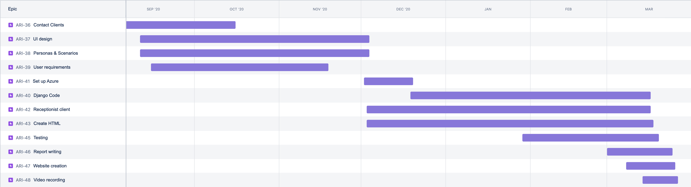

Q-VU
COMP0016 Team 34
PROJECT BRIEF:
"A full webservice that enables any GP practice or NHS clinic with a laptop and a webcam to generate a virtualised call queue with real receptionists engaging from their practice or at home, like waiting to be seen in an actual practice. The service will be activated by a twillio SMS message while you are in a waiting call to activate a link. It will present a visualisation of the patient queue and an estimate as to how long the patient will wait to be seen, as well as the ability for patients to provide a quick summary of their query for receptionists to answer them faster. It may also provide possible FHIR interaction for simulating patient records access for even greater efficiency and patient attention."
The system we have created utilises an Azure based Django server for the callers and a java client for the receptionists. The callers initially are presented with a html page (served by the Django server) and can input their name, date of birth etc for the receptionists use. They are then moved into a queue where they can enter a description to be shown to the receptionist. The receptionist will be shown a screen of the callers in the queue as well as the data the caller has provided. They can then send links to the callers accord to what is most appropriate - this will then redirect the caller to a screen with this link for them to click.
This system allows for a greater degree of efficiency for receptionists and should reduce caller time in the queue while improving their caller experience. This is because the receptionists does not need to talk to every caller in a linear fashion. If someone can just be forwarded onto another member of staff or a self referral form etc then they can be, this will mean some callers can be processed much faster. This will reduce wait times for callers therefore making the experience far better.
Links to video and blog:
Group Blog
LINK TO VIDEO
Development team
Joshua Mukherjee
joshua.mukherjee.19@ucl.ac.uk
Client liaison, Programmer
Shaheer Ahmed
shaheer.ahmed.19@ucl.ac.uk
Blog editor, Programmer
Tangsheng Geng
tangsheng.geng.17@ucl.ac.uk
UI designer, Programmer
GANTT CHART:
